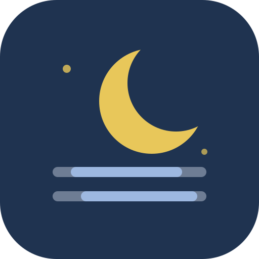

2週間、朝に1分だけ記録してください
不眠の認知行動療法（CBT-I）では、まず睡眠日誌をつけて「実際に眠れている時間」と「床にいる時間」のずれを知ります。CBT-I は欧米の診療ガイドラインで慢性不眠の最初に試す治療とされている方法です。
- 毎朝、昨夜の寝た時刻・起きた時刻などを入れる（1分）
- 1週間たつと、睡眠効率と「眠る時間の目安」が出る
- 2週間で、自分の眠りの傾向をまとめたレポートが完成
このアプリは医療機器ではなく、診断や治療はしません。眠りの習慣を見直すためのセルフケアの道具です。

ねむり日誌
研究にもとづく 2週間の睡眠日誌
不眠の認知行動療法（CBT-I）では、まず睡眠日誌をつけて「実際に眠れている時間」と「床にいる時間」のずれを知ります。CBT-I は欧米の診療ガイドラインで慢性不眠の最初に試す治療とされている方法です。
このアプリは医療機器ではなく、診断や治療はしません。眠りの習慣を見直すためのセルフケアの道具です。
薄い帯＝床にいた時間、濃い帯＝眠っていた時間のおよその位置（夜中に起きていた分は差し引いて右の％に反映）。右の数字は睡眠効率。
医師に相談するときや、自分の手帳に。コピーするだけで、どこにも送りません。
CBT-I の中心になる「刺激制御法」と「睡眠制限法」から、自分で始められる部分だけを抜き出しました。
記録の項目は Carney らの「コンセンサス睡眠日誌」の中心項目にそろえています。
毎朝そろえる起床時刻。眠る時間の目安は、ここから逆算して「床に入る時刻」を出します。
記録はこの端末のブラウザの中だけにあります。機種変更・ブラウザのデータ削除で消えるので、ときどき書き出してください。iPhone はホーム画面に追加すると消えにくくなります。
読み込みは合流です。同じ日付の記録は、ファイルの内容で置き換えます。
この端末の記録と設定を消します。元に戻せません。